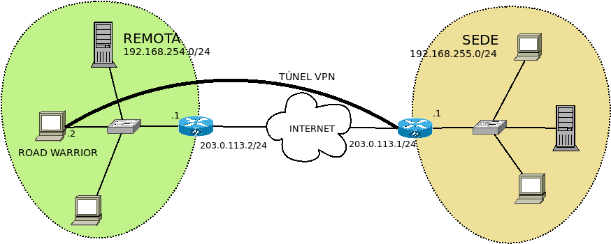

7.4.3.2.1. Configuración¶
Debemos limitarnos a resolver la comunicación en capa 3. Podemos, eso sí, distinguir si nuestra intención es conectar un equipo móvil con una sede o intercomunicar dos sedes. La diferencia entre uno y otro caso se deben al tratamiento que deseamos dar en la parte del cliente. Así, en el primer caso:
La conexión será esporádica, ya que el equipo cliente no se encontrará permanentemente encendido.
Lo habitual es que nuestra intención se limite a permitir exclusivamente el acceso del equipo móvil a la sede, y no el acceso de los equipos de la sede al equipo móvil, o el acceso del resto de equipos que se encuentran en la red del equipo móvil a la sede.
Podría darse el caso de que deseáramos encauzar todo el tráfico a través del túnel (p.e. para burlar restricciones en la red del cliente).
En el segundo caso, en cambio:
Al ser el cliente, a su vez, una sede, el extremo cliente será también permanente y, además, es bastante probable que a su vez queramos que se comporte como servidor de sus propios guerreros de la carretera.
Por lo general, nuestra intención será que los equipos de ambas redes, todos, se puedan comunicar con los equipos de la otra sede.
Lo normal es que cada sede conecte a internet a través de sus correspondientes puertas de enlace y que el túnel se dedique exclusivamente al tráfico que tiene por destino final la otra sede.
Nota
wireguard proporciona en espacio de usuario la orden wg para configurar los aspectos de la interfaz virtual propios del túnel. Para otros más generales (asignar IPs o modificar el encaminamiento) deben usarse las herramientas habituales. Sin embargo, junto a esta orden, se incluye wg-quick, un script de bash que simplifica la creación del túnel, llevando a cabo automáticamente todas las tareas necesarias. Para este epígrafe de configuración básica nos servirá el script.
7.4.3.2.1.1. Sede-equipo móvil¶
Supongamos el siguiente punto de partida:
con estos datos:
Extremo |
Características |
|
|---|---|---|
Servidor |
Interfaz (eth0) |
203.0.113.1 |
Red |
192.168.255.0/24 |
|
Interfaz VPN |
10.8.0.1/24 |
|
Cliente |
Interfaz (eth0) |
192.168.254.2 |
Red |
192.168.254.0/24 |
|
Interfaz VPN |
10.8.0.2/24 |
|
Esto es, el servidor VPN es el router que da acceso a la red 192.168.255.0/24 y el cliente un equipo móvil conectado a una red interna con acceso a internet. Ciertamente el servidor VPN no tiene que ser obligatoriamente el router, pero que lo sea simplifica la configuración.
7.4.3.2.1.1.1. Interfaces virtuales¶
Lo primero es configurar en cliente y servidor sus respectivas interfaces virtuales y ello pasa por generar las claves pública y privada de cada extremo.
Cliente
Primero generamos las claves:
# cd /etc/wireguard
# wg genkey | tee privatekey | wg pubkey > publickey
# cat privatekey
WB4TAWIIlaOyULudlcdhqctTl/pdzO7m+6x4DhAP+0k=
# cat publickey
f2CH3QXHiXwFhdATcDi42DU+PUOC9Ky8BgkHBigY5H4=
Y después creamos la configuración de la interfaz en el fichero
/etc/wireguard/wg0.conf:
[Interface]
Address = 10.8.0.2/24
PrivateKey = WB4TAWIIlaOyULudlcdhqctTl/pdzO7m+6x4DhAP+0k=
Luego deberemos regresar a este fichero.
Servidor
De nuevo, generamos un par de claves:
# cd /etc/wireguard
# wg genkey | tee privatekey | wg pubkey > publickey
# cat privatekey
kEANNMfztMtzgwFyyaWOou7+c8ZPD/lyGhmcM7oFtXA=
# cat publickey
/Pr37VgN7GVvizJw9FpCL62DSwocdNEf7lwfdDRZXj8=
Y a continuación definimos la interfaz en /etc/wireguard/wg0.conf:
[Interface]
Address = 10.8.0.1/24
ListenPort = 1194
PrivateKey = kEANNMfztMtzgwFyyaWOou7+c8ZPD/lyGhmcM7oFtXA=
#PostUp = iptables -t nat -A PREROUTING -i %i -j CONNMARK --set-mark 1
#PostUp = iptables -t nat -A POSTROUTING -m connmark --mark 1 -j MASQUERADE
#PostDown = iptables -t nat -D PREROUTING -i %i -j CONNMARK --set-mark 1
#PostDown = iptables -t nat -D POSTROUTING -m connmark --mark 1 -j MASQUERADE
Hemos definido en esta ocasión el puerto de escucha (1194/UDP) para que el cliente sepa con certeza a cuál debe conectar. En el cliente, como no se ha definido se escogerá uno al azar.
Otro aspecto importante es el de acceso a la red interna 192.168.255.0/24. Si
el servidor es también la puerta de enlace de la red interna, entonces no habrá
que hacer nada más, ya que estará ya definido para aceptar paquetes ajenos y,
además, cualquier paquete cuyo destino sea el exterior pasará por él y el sabrá
si tiene que enviarlo a través de la interfaz externa o a través de la interfaz
virtual. En cambio, si no es puerta de enlace será necesario incluir las cuatro
líneas comentadas que aseguran el enmascaramiento del tráfico saliente que
procede del VPN y, además, deberemos aceptar paquetes ajenos estableciendo a
1 el parámetro net.ipv4.ip_forward. Para ello podemos editar
/etc/sysctl.conf y descomentar la línea:
net.ipv4.ip_forward = 1
que tendrá efecto en el próximo reinicio, pero que podemos recargar con:
# sysctl -p
7.4.3.2.1.1.2. Declaración del otro extremo¶
El fichero /etc/wireguard/wg0.conf no se ha completado aún porque, además
de la interfaz, se define la configuración del otro extremo del túnel. Por cada
extremo, debe incluirse una sección [Peer].
Cliente
Dejaremos el fichero de este modo:
[Interface]
Address = 10.8.0.2/24
PrivateKey = WB4TAWIIlaOyULudlcdhqctTl/pdzO7m+6x4DhAP+0k=
[Peer]
PublicKey = /Pr37VgN7GVvizJw9FpCL62DSwocdNEf7lwfdDRZXj8=
Endpoint = 203.0.113.1:1194
AllowedIPs = 10.8.0.1/32, 192.168.255.0/24
#AllowedIPs = 0.0.0.0/0
Donde se ha añadido un [Peer] para el servidor. Se declara su clave pública, la dirección de conexión a través de Endpoint y cuáles son las redes de destino para las que se usará el túnel (AllowedIPs). Tal y como está la configuración, accederemos al propio servidor y la red local del servidor; pero si usamos la línea comentada alternativa, convertiremos el servidor VPN en la puerta predeterminada y accederemos a internet a través del túnel, lo cual puede resultar útil si el cliente se encuentra en una red que nos restringe accesos. Al levantar la interfaz, wireguard se encargará de modificar las reglas y tablas de encaminamiento para hacer esto posible.
Nota
Si añadimos a [Interface] la opción:
Table = off
no se llevará a cabo modificación del encaminamiento y deberemos ser nosotros los que a mano alteremos el encaminamiento.
Advertencia
Asegúrese de que en las redes indicadas en AllowedIPs no se encuentra ninguna que incluya la IP expresada en Endpoint o, de lo contrario, el túnel no funcionará.
Servidor
En el servidor el añadido será éste:
[Interface]
Address = 10.8.0.1/24
ListenPort = 1194
PrivateKey = kEANNMfztMtzgwFyyaWOou7+c8ZPD/lyGhmcM7oFtXA=
[Peer]
PublicKey = f2CH3QXHiXwFhdATcDi42DU+PUOC9Ky8BgkHBigY5H4=
AllowedIPs = 10.8.0.2/32
Obsérvese que en el servidor el único interés será alcanzar al cliente y no su red, de ahí que no se añada más que la IP del otro extremo del túnel. Además, no se define cuál es el otro extremo exactamente (Endpoint) porque no podemos hacerlo puesto que el puerto del cliente será aleatorio y porque no es necesario si es el cliente el que intenta conectar primero. Así, pues, cuando hagamos la primera prueba, tendremos que hacerla de cliente a servidor y no servidor a cliente.
Nota
Si el servidor aceptase más clientes móviles, bastaría con añadir más secciones [Peer].
7.4.3.2.1.1.3. Establecimiento del túnel¶
Para establecer el núcleo debemos hacer exactamente la misma acción en cliente y servidor: levantar la interfaz. Para ello tenemos tres alternativas:
Hacerlo de forma manual:
# wg-quick up wg0 # wg-quick down wg0
Habilitarlo como servicio de systemd para que la interfaz se levante automáticamente durante cada inicio:
# systemctl enable wg-quick@wg0 # systemctl start wg-quick@wg0
aunque es probable que esto sólo nos interese en el caso del servidor.
Editar el fichero
/etc/network/interfacespara poder utilizar ifupdown en la gestión de la interfaz virtual:auto wg0 iface wg0 inet manual pre-up wg-quick up $IFACE down wg-quick down $IFACE
aunque es probable que auto sólo queremos escribirlo en la configuración del servidor. De este modo, la manipulación de la interfaz puede llevarse a cabo exactamente igual que como con el resto de interfaces:
# ifup wg0 # ifdown wg0
Establecido el túnel al configurar ambos extremos, podemos desde el cliente probar la configuración:
$ ping -c1 10.8.0.1
$ wg show
interface: wg0
public key: f2CH3QXHiXwFhdATcDi42DU+PUOC9Ky8BgkHBigY5H4=
private key: (hidden)
listening port: 43577
peer: /Pr37VgN7GVvizJw9FpCL62DSwocdNEf7lwfdDRZXj8=
endpoint: 203.0.113.1:1194
allowed ips: 10.8.0.1/32
latest handshake: 1 hour, 3 minutes, 32 seconds ago
transfer: 604 B received, 3.71 KiB sen
También podemos comprobar que para llegar a 192.168.255.1 usamos el túnel y no la puerta de enlace predeterminada:
# ip route get 1.1.1.1
1.1.1.1 via 192.168.254.1 dev eth0 src 192.168.254.2 uid 0
cache
# ip route get 192.168.255.1
192.168.255.1 dev wg0 src 10.8.0.2 uid 0
cache
7.4.3.2.1.1.4. Clientes adicionales¶
Pueden conectarse varios clientes a un mismo servidor: basta con configurarlos convenientemente y añadir nuevas secciones [Peer] en el servidor. Obviamente, cada cliente tendrá una IP distinta de la red del túnel:
$ cat >> /etc/wireguard/wg0.conf
[Peer]
PublicKey = CLAVE-PUBLICA-DEL-NUEVO-CLIENTE
AllowedIPs = 10.8.0.3/32
Ahora bien, para que se añada al servidor el cliente de forma efectiva, es necesario releer el archivo y eso obliga a reiniciarlo. Si queremos evitarlo, podemos pasarle en caliente las nuevas líneas a wireguard:
$ tail -n3 /etc/wireguard/wg0.conf | wg addconf wg0 /dev/fd/0
7.4.3.2.1.2. Sede-sede¶
Este caso no es substancialmente distinto del anterior y nos lo podemos plantear como aquel caso en que ambos puntos se configuran simétricamente.

Los datos son los siguientes:
Extremo |
Características |
|
|---|---|---|
Servidor |
Interfaz (eth0) |
203.0.113.1 |
Red |
192.168.255.0/24 |
|
Internet VPN |
10.8.0.1/24 |
|
Cliente |
Interfaz (eth0) |
203.0.113.2 |
Red |
192.168.254.0/24 |
|
Internet VPN |
10.8.0.2/24 |
|
Como, además, suponemos que el túnel se establece entre las puertas de enlace, no tenemos que preocuparnos por hacer enmascaramiento o crear entradas adicionales en la tabla de encaminamiento.
Cliente
[Interface]
Address = 10.8.0.2/24
ListenPort = 1194
PrivateKey = WB4TAWIIlaOyULudlcdhqctTl/pdzO7m+6x4DhAP+0k=
[Peer]
PublicKey = /Pr37VgN7GVvizJw9FpCL62DSwocdNEf7lwfdDRZXj8=
Endpoint = 203.0.113.1/24
AllowedIPs = 10.8.0.1/32, 192.168.255.0/24
En este caso, sí fijamos el puerto de escucha, no porque el caso lo requiera, sino para facilitar que posibles clientes móviles puedan, a su vez, conectarse a la sede
Servidor
[Interface]
Address = 10.8.0.1/24
ListenPort = 1194
PrivateKey = kEANNMfztMtzgwFyyaWOou7+c8ZPD/lyGhmcM7oFtXA=
[Peer]
PublicKey = f2CH3QXHiXwFhdATcDi42DU+PUOC9Ky8BgkHBigY5H4=
Endpoint = 203.0.113.2/24
AllowedIPs = 10.8.0.2/32, 192.168.254.0/24
La única diferencia con la configuración sede-equipo móvil es que ahora sí interesará hacer accesible a la red del otro extremo, de ahí que se haya añadido AllowedIPs. Adicionalmente, hemos declarado la dirección del otro punto, ya que la conocemos y no cambiará.